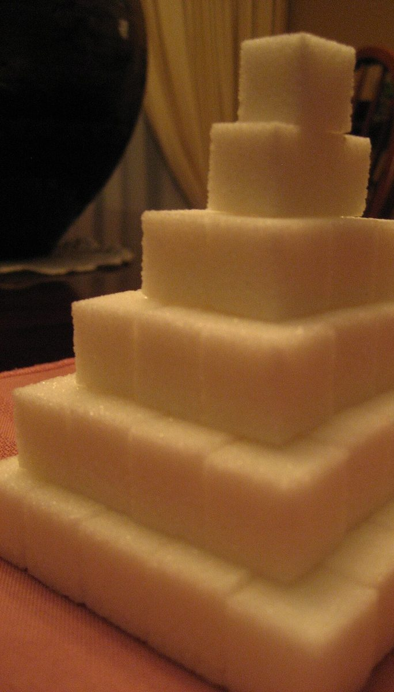
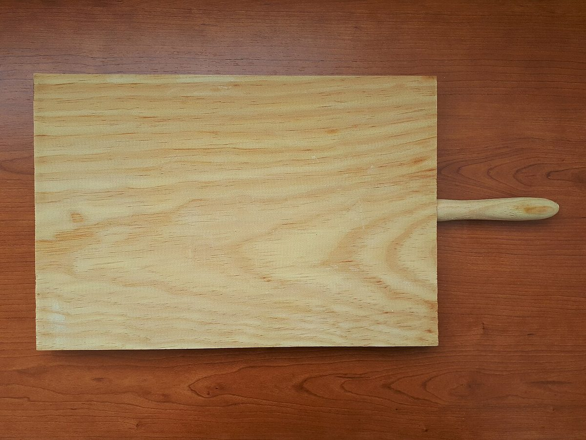

かどが とれる ごだんかい
1/5 ぴん角
BUTTER
カフェ
〒560-0004 大阪府豊中市少路2丁目3-17 にあるカフェ「BUTTER」のご案内ページです。営業時間やメニューは準備中。Instagramもあわせてご覧ください。

段階1の見本
まだ角が立っているもの
写真は国外または撮影地不明のフリー素材で、お店のものではありません。


ご案内
確認できていること
| 所在地 | 〒560-0004 大阪府豊中市少路2丁目3-17 |
|---|---|
| 電話 | なし |
| 営業時間 | 準備中 |
| 定休日 | 準備中 |
| ご予約 | 準備中 |
| 駐車場 | 準備中 |
| SNS | Instagram @old_butter0619 |